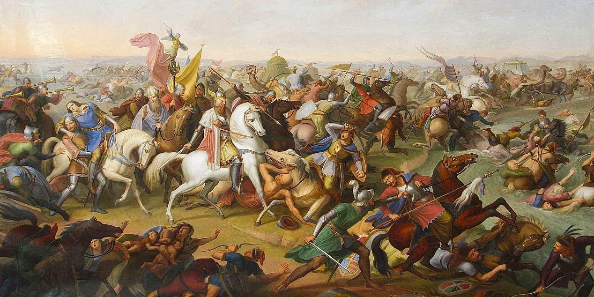

Германцы во главе с королем Оттоном I разгромили вторгшихся в Центральную Европу кочевников-венгров, остановив угрозу христианству со стороны варваров. Битва произошла на реке Лех у Аугсбурга и получила название Лехской.

Король собрал 10 000 всадников, впятеро уступая противнику по численности, хотя и превосходя по мощи вооружения - тяжелая кавалерия против легкой. Победа была достигнута в первую очередь благодаря строгой дисциплине.
Окружив противника, многие венгры спешились и бросились грабить обозы, что позволило Оттону, направив часть своих сил, их уничтожить. Затем удар был нанесен по главным силам врага. Даже преследуя отступающих, германские отряды не нарушали боевого порядка, помня о своей малочисленности и не позволяя себе дробить силы, чем мог бы воспользоваться противник.
Часть попавших в плен врагов была казнена, другая лишена ушей и носов и отправлена восвояси.